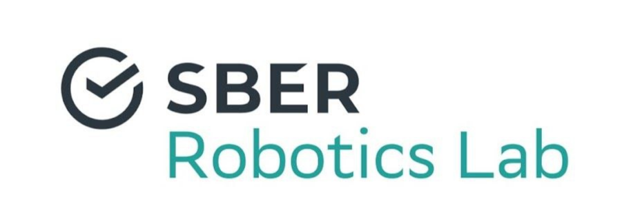

The Titile of Fancy Presentation
The cool looking html slides
![]()
Sep 28, 2023
Control Elements
Toggle the slide menu with the menu button (top left) to go to other slides and access presentation tools.
Use the chalkboard button (bottom left) of the slide to toggle the chalkboard.
Use the notes canvas button at the (bottom left) to toggle drawing on top of the current slide.
Hotkeys
There are some features and hot keys:
| → , ↓ , ← , ↑ | Navigation |
| Alt + ←/↑/→/↓ | Navigate without fragments |
| Shift + ←/↑/→/↓ | Jump to first/last slide |
| CTRL + Shift + F | Search |
| ESC, O | Slide overview |
| F | Fullscreen |
| S | Speaker notes view |
| B, C | Toggle chalkboard/notes canvas |
| DEL, BACKSPACE | Clear/reset drawings on slide |
| M | Toggle menu |
The full list of hotkeys is accesable via key “?”
Text, Layout, Fragments
Text Formatting
The text is formatted via markdown or html, bold, italic, underline, superscript2, subscript2, strikethrough, verbatim code, https://google.org, link to google
Lower Header
Here is a footnote reference1
You may create the footer like this
Lists, Layout, Tabsets
The layout can be changed, for instance as 2 columns:
Unordered list:
- unordered list 1
- sub-item 1
- unordered list 2
Ordered list:
- unordered list 1
- sub-item 1
- item 2
Some content is in the first tab
while some in the second…
Hello there
Fragments and Pause
Incremental text display and animation with fragments:
Strike
Color highlight
Fade in
Slide up while fading in
Slide left while fading in
Fade in then semi out
one can also “pause” the slide….
and continue with something
Code, Tables, Figures, Videos
Codeu
The code blocks are orginized as in Markdown:
The lines can be highlighted via argument code-line-numbers:
Tables
Tables can be orginized via markdown, while providing control over column-widths and text location
| fruit | price |
|---|---|
| apple | 2.05 |
| pear | 1.37 |
| orange | 3.09 |
| Right | Left | Centered |
|---|---|---|
| Bananas | $1.34 | built-in wrapper |
| Oranges | $2.13 | some text |
Tables can be cross referenced as Table 1
| Col1 | Col2 | Col3 | Col4 | Col5 | Col6 |
|---|---|---|---|---|---|
| A | B | C | D | E | F |
| E | F | G | H | I | J |
| A | G | G | K | L | M |
Figures
Figure 1: Sberbank Agile Office
One may refer to figure Figure 1
Subfigures
Videos
Equations, Theorems, Citations, Bibliography
LaTeX Equations
MathJax rendering of equations to HTML. Inline equations are included within a line of text \(E=mc^2\).
Displayed equations set apart from the text: \[ \int_{-\infty}^\infty e^{-x^2}dx = \sqrt{\pi} \]
Equations can be auotumathecally numbered:
\[ \mathbf {O} ={\underset {\Omega }{\operatorname {argmin} }}\|\mathbf {A} {\boldsymbol {\Omega }}-\mathbf {B} \|_{F}\quad {\text{subject to}}\quad {\boldsymbol {\Omega }}^{\textsf {T}}{\boldsymbol {\Omega }}=\mathbf {I} \qquad(1)\]
and referenced as (Equation 1)
Theorems, Lemmas, Exercises
Theorem 1 (Fundamental theorem of calculus) Let \(f\) be a continuous real-valued function defined on a closed interval \([a, b]\). Let \(F\) be the function defined, for all \(x\) in \([a, b]\), by \(F(x)=\int _{a}^{x}f(t)\,dt.\) Then \(F\) is uniformly continuous on \([a, b]\) and differentiable on the open interval \((a, b)\), and \(F'(x)=f(x)\) for all \(x\) in \((a, b)\) so \(F\) is an antiderivative of \(f\)
Theorems are cross-referable as Theorem 1.
There are a number of theorem variations supported, each with their own label prefix: lemmas are #lem, proposition are #prp etc, read more
Citations
The bib references and csl is fully supported, one may cite the articles, books etc.
According to Newton’s Philosophiæ Naturalis Principia Mathematica [1].
Dantzig’s work on linear programming [2].
Feynman’s space-time approach to non-relativistic quantum mechanics [3].
Celebrated Turing’s work on computable numbers [4].
Bibliography
And More…
- Touch - presentations look great on mobile, swipe to navigate slides.
- Multiplex - allows your audience to follow the slides of the presentation you are controlling on their own phone, tablet or laptop.
- Themes - 10 Built-in or create your own
- Auto-Slide - step through slides automatically, without any user input
- Widgets - include Jupyter widgets and htmlwidgets in your presentations
- Embedding Jupyter Notebooks - include the output of an external Jupyter notebook in a Quarto document.
Follow https://quarto.org/ for more!
